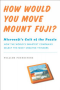

techInterview
Answers to technical interview questions - accepting donations for dogs
faq
reading
feedback
discuss
archive
fogcreek
bug tracking
pets in ny
petfinder

*new* techInterview bible
thank your brain
save a dog's life
|
Solved by
michael
problem: three cannibals and three anthropologists have to cross a river. the boat they have is only big enough for two people. if at any point in time there are more cannibals on one side of the river than anthropologists, the cannibals will eat them. what plan can the anthropologists use for crossing the river so they don't get eaten? A - anthropologist
C - cannibal
++ - boat
river
AAA |============|
|++ |
CCC |============|
need to make it
river
|============| AAA
| ++|
|============| CCC
note that if you violate the "anthropologists > cannibals" rule at any point in time, it is illegal.. for example if a boat with a cannibal and an anthropologist travels to a shore with one cannibal on it, then # cannibals > # anthropologists, even if you say the anthropologist immediately takes the boat back. Let W be the west shore which they are all on. Let E be the east shore where they want to go. 1. A and C cross
W = { A, A, C, C }
E = { A, C }
2. A returns
W = { A, A, A, C, C }
E = { C }
3. C and C cross
W = { A, A, A }
E = { C, C, C }
4. C returns
W = { A, A, A, C }
E = { C, C }
5. A and A cross
W = { A, C }
E = { A, A, C, C }
6. A and C return
W = { A, A, C, C }
E = { A, C }
7. A and A cross
W = { C, C }
E = { A, A, A, C }
8. C returns
W = { C, C, C }
E = { A, A, A }
9. C and C cross
W = { C }
E = { A, A, A, C, C }
10. C returns
W = { C, C }
E = { A, A, A, C }
11. C and C cross
W = true
E = { A, A, A, C, C, C }
|